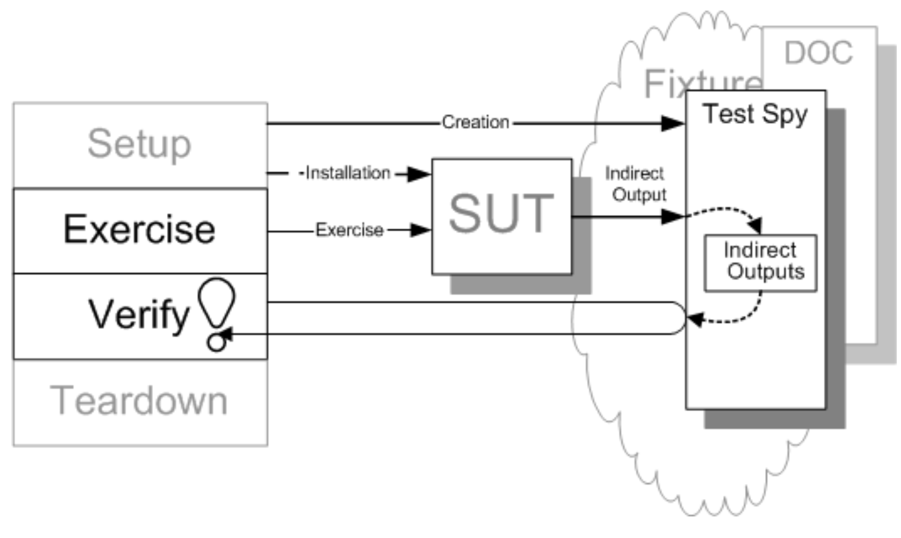
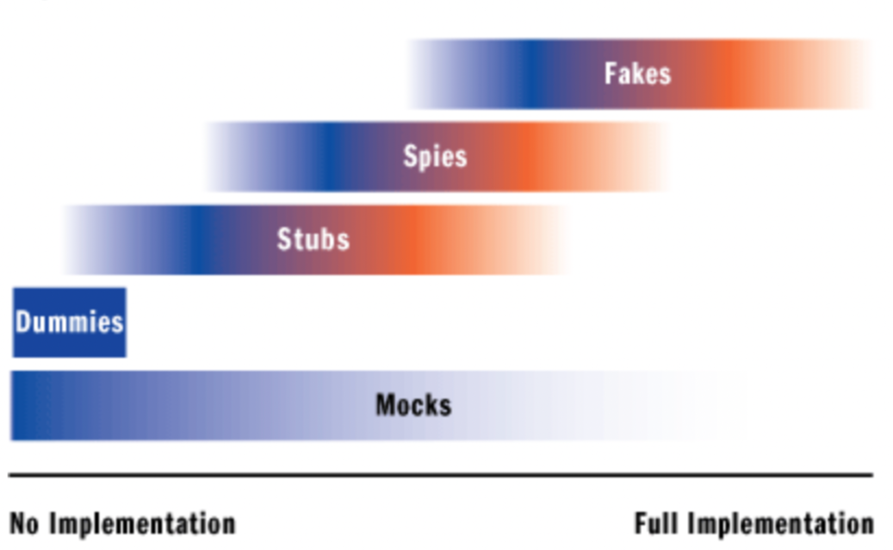

[comment]: # (This presentation was made with markdown-slides) [comment]: # (This is a CommonMark compliant comment. It will not be included in the presentation.) [comment]: # (Compile this presentation with the command below) [comment]: # (mdslides presentation.md --include media) [comment]: # (Set the theme:) [comment]: # (The list of themes is at https://revealjs.com/themes/) [comment]: # (The list of code themes is at https://highlightjs.org/) [comment]: # "You can also use quotes instead of parenthesis" [comment]: # (Pass optional settings to reveal.js:) [comment]: # (markdown: { smartypants: true }) [comment]: # (Other settings are documented at https://revealjs.com/config/) Jimmy | Shopl & Company | June 7, 2022 # 테스트 더블 [comment]: # (1. 왜 '테스트 더블을 주제로 선정했는 지')
<div style="text-align:center;"> </div> <div style="text-align:center; font-size:20px;"> <strong>< <i>Stunt double</i> ></strong> </div>
[comment]: # (1. 유래를 통한 테스트 더블의 이해) [comment]: # (2. 테스트에서 테스트 더블이 어떤 역할을 어떻게 대신하는 지 ) [comment]: # (## 주석 - XUnit Test Patterns ) ### 테스트 더블이란? <br/> <p style="font-size:30px;"> <span style="color:#ba2552; text-decoration:underline;"><strong>테스트 목적</strong></span>을 위해 프로덕션 <span style="color:#ba2552; text-decoration:underline;"><strong>객체를 다른 무언가로 교체</strong></span>하는 <br/> 모든 경우를 표현하는 용어 </p> <div style="display:flex; justify-content:center;"> <div style="border-left:3px solid #a2a9b3; font-size:25px; font-style:italic; color:#a2a9b3; box-sizing:content-box; width:fix-content; padding-left:20px;"> Test Double is a generic term for any case where you replace <br/> a production object for testing purposes. </div> </div> <br/> <div style="text-align:right; font-size:17px;"> xUnit Test Patterns, 2007 </div>
## Dummy ## Stub ## Fake ## Spy ## Mock
# Dummy
# Dummy * 실제로 사용되지 않지만 전달되기 위해 만들어지는 객체
# Dummy * 실제로 사용되지 않지만 전달되기 위해 만들어지는 객체 * 주로 매개변수 목록을 채우는 용도
Dummy 예제 - 로그인 기능 구현 ```java [|3|5-7|9-11|13|] public class LoginService { public boolean login(Email email, Password password) { if (email.validate()) { throw new IllegalArgumentException("Invalid email"); } if (password.validate()) { throw new IllegalArgumentException("Invalid password"); } return true; } } ```
Dummy 예제 - 이메일 유효성 TC ```java [|5] @Test void login_GivenInvalidEmail_ThrowIllegalArgument...() { Email email = new Email("jimmy.lee # shoplworks.com"); Password password = new Password("any string"); assertThatThrownBy( () -> { loginService.login(email, password); }) .isInstanceOf(IllegalArgumentException.class) .hasMessage("Invalid email"); } ```
Dummy 예제 - 현업에선... ```java [|1|2|3|4|5|6|7|8|9|10|11|12|13|14|15|16|17|18|19|20|21|22|23|24|25|26|27|28|29|30] Person person = Person.builder() .firstName("ji") .lastName("mmy") .email("foo.bar@gmail.com") .gender(Gender.MALE) .isEmailReceive(false) .address(Address.builder() .zipCode("123456") .city("suzi") .country("Korea") .street(Street.builder() .number(12) .type((byte)1) .name("Oxford street") .build()) .build()) .phone(Phone.builder() .countryCode("82") .number("010-2384-0880") .build()) .height(Height.builder() .unit(LengthUnitType.CM) .value(165) .build()) .weight(Weight.builder() .unit(WeightUnitType.KG) .value(92) .build()) .build(); ```
## Dummy 관련 유용한 오픈소스 * [Fixture Monkey](https://naver.github.io/fixture-monkey/docs/v0.3.x/getting-started/) ```java FixtureMonkey sut = FixtureMonkey.create(); Person person = sut.giveMeOne(Person.class); ``` * [Easy Random](https://github.com/j-easy/easy-random) ```java Person person = easyRandom.nextObject(Person.class); ```
# Stub
# Stub * 마치 실제로 동작하는 것처럼 보이게 만들어 놓은 객체
# Stub * 마치 실제로 동작하는 것처럼 보이게 만들어 놓은 객체 * 특정 상태를 가정한 하드코딩된 상태 -> 반환 값을 미리 정의
Stub 예제 - 로그인 기능 구현 ```java [|9-11] public class LoginService { public boolean login(Email email, Password password) { if (email.validate()) { throw new IllegalArgumentException("Invalid email"); } if (password.validate()) { throw new IllegalArgumentException("Invalid password"); } return true; } } ```
Stub 예제 - 패스워드 유효성 TC (직접구현) ```java public class EmailStub extends Email { ... @Override public boolean validate(){ return true; } } ``` ```java @Test void login_GivenInvalidPassword_ThrowIllegalArgument...() { Email email = new EmailStub("any string"); Password password = new Password("donothavenumber"); assertThatThrownBy( () -> { loginService.login(email, password); }) .isInstanceOf(IllegalArgumentException.class) .hasMessage("Invalid password"); } ```
Stub 예제 - 패스워드 유효성 TC (Mockito) ```java [|4-5] @Test void login_GivenInvalidPassword_ThrowIllegalArgument...() { Email email = Mockito.mock(Email.class) given(email.validate()).willReturn(true); Password password = new Password("donothavenumber"); assertThatThrownBy( () -> { loginService.login(email, password); }) .isInstanceOf(IllegalArgumentException.class) .hasMessage("Invalid password"); } ```
Stub 되지 않은 다른 메서드들은 어떻게 동작할까? ```java [1-2] Password password = Mockito.mock(Password.class); given(password.validate()).willReturn(true); ``` <!-- .element: data-id="code" -->
Stub 되지 않은 다른 메서드들은 어떻게 동작할까? ```java [4] Password password = Mockito.mock(Password.class); given(password.validate()).willReturn(true); password.encrypt(); ?? ``` <!-- .element: data-id="code" -->
Stub 되지 않은 다른 메서드들은 어떻게 동작할까? ```java [4] Password password = Mockito.mock(Password.class); given(password.validate()).willReturn(true); password.encrypt(); ?? ``` <!-- .element: data-id="code" --> <div style="display:flex; justify-content:center;"> <div style="border-left:3px solid #a2a9b3; font-size:25px; font-style:italic; color:black; box-sizing:content-box; width:fix-content; padding-left:20px;"> stub 되지 않은 메서드들에 대해서는 Mockito의 <a href="https://javadoc.io/static/org.mockito/mockito-core/3.5.10/org/mockito/Mockito.html#RETURNS_DEFAULTS"> Answers.RETURNS_DEFAULTS </a> 에서 정의한 기본 메서드들을 실행 </div> </div>
# Fake
# Fake * 제품에는 적합하지 않지만, 실제 동작하는 구현을 제공
# Fake * 제품에는 적합하지 않지만, 실제 동작하는 구현을 제공 * 프로덕션 DB 대신 인메모리 DB, 테스트 용도 DB 별도 구성하여 활용
Fake 예제 - 로그인 이력 데이터 저장 추가 ```java [|3|5-7|13] public class LoginService { private final LoginHistoryRepository loginHistoryRepository; public LoginService(LoginHistoryRepository loginHistoryRepository){ this.loginHistoryRepository = loginHistoryRepository; } public boolean login(Email email, Password password) { ... email&password validation ... loginHistoryRepository.save(new LoginHistory(email)); return true; } } ```
Fake 예제 - Fake 구현 ```java public class FakeLoginHistoryRepository implements LoginHistoryRepository{ private static final List<LoginHistory> fakeTable = new ArrayList<>(); public void save(LoginHistory loginHistory){ this.fakeTable.add(loginHistory); } public List<LoginHistory> findByEmail(String email){ return this.fakeTable .stream() .filter(row -> row.getEmail().equals(email)) .collect(toList()); } } ```
Fake 예제 - 로그인 이력 저장 TC ```java [|6-10|15-17|19|21-24] public class LoginServiceTest { LoginService loginService; LoginHistoryRepository fakeLoginHistoryRepository; @BeforeEach void setUp(){ fakeLoginHistoryRepository = new FakeLoginHistoryRepository(); loginService = new LoginService(fakeLoginHistoryRepository); } @Test void login_GivenValidationPass_ThenSaveLoginHistory() { Email email = new Email("jimmy.lee@shoplworks.com"); Password password = Mockito.mock(Password.class); given(password.validate()).willReturn(true); loginService.login(email, password); List<LoginHistory> savedLoginHistoryList = fakeLoginHistoryRepository.findByEmail(email.getValue()); assertThat(savedLoginHistoryList).size(1); assertThat(savedLoginHistoryList.get(0).getValue()).size("jimmy.lee@shoplworks.com"); } } ```
# Spy
# Spy * 메소드의 사용 여부, 정상 호출 여부에 대한 기록이 필요할 때 활용
<div style="text-align:center;">  </div> <div style="text-a lign:center; font-size:20px;"> * SUT : System Under Test. 테스트 중인 시스템, 즉 테스트 대상 </div> <p style="font-size:25px;"> SUT에 의해 만들어진 또 다른 컴포넌트의 <span style="color:#ba2552; text-decoration:underline;"> <strong>간접 출력을 포착</strong></span> 할 수 있도록 <br /> 테스트 더블을 활용해야 한다. 포착된 간접 출력은 <span style="color:#ba2552; text-decoration:underline;"> <strong>테스트 검증을 위해 활용</strong></span> 된다. </p> <div style="display:flex; justify-content:center;"> <div style="border-left:3px solid #a2a9b3; font-size:25px; font-style:italic; color:#a2a9b3; box-sizing:content-box; width:fix-content; padding-left:20px;"> Use a Test Double to capture the indirect output calls made to another component by the system under test (SUT) for later verification by the test. </div> </div> <br /> <div style="text-align:right; font-size:20px;"> xUnit Test Patterns, 2007 </div>
Spy 예제 - 로그인 성공 시 이메일 전송 추가 ```java [|4|14] public class LoginService { private final LoginHistoryRepository loginHistoryRepository; private final EmailService emailService; ...init constructor... public boolean login(Email email, Password password) { ... email&password validation ... ... save login history ... emailService.sendLoginSuccessEmail(email.getValue()); return true; } } ```
Spy 예제 - Spy 구현 ```java [|3-4|15-20] public class SpyEmailService extends EmailService { private boolean called; private int calledCount; private String email; public boolean isCalled() { return this.called; } public String getEmail(){ return this.email; } @Override public void sendLoginSuccessEmail(String email){ this.called = true; this.calledCound++; this.email = email; } } ```
Spy 예제 - 이메일 전송 TC (직접구현) ```java public class LoginServiceTest { LoginService loginService; LoginHistoryRepository fakeLoginHistoryRepository; EmailService spyEmailService; @BeforeEach void setUp(){ fakeLoginHistoryRepository = new FakeLoginHistoryRepository(); spyEmailService = new SpyEmailService(); loginService = new LoginService(fakeLoginHistoryRepository, spyEmailService); } @Test void login_GivenValidationPass_ThenSendEmail() { Email email = new Email("jimmy.lee@shoplworks.com"); Password password = Mockito.mock(Password.class); given(password.validate()).willReturn(true); loginService.login(email, password); assertThat(spyEmailService.isCalled()).isTrue(); assertThat(spyEmailService.getCalledCount()).isEqualTo(1); assertThat(spyEmailService.getEmail()).isEqualTo("jimmy.lee@shoplworks.com"); } } ```
Spy 예제 - 이메일 전송 TC (Mockito) ```java public class LoginServiceTest { LoginService loginService; LoginHistoryRepository fakeLoginHistoryRepository; EmailService spyEmailService; @BeforeEach void setUp(){ fakeLoginHistoryRepository = new FakeLoginHistoryRepository(); spyEmailService = Mockito.mock(EmailService.class); loginService = new LoginService(fakeLoginHistoryRepository, spyEmailService); } @Test void login_GivenValidationPass_ThenSendEmail() { ArgumentCaptor<String> captor = ArgumentCaptor.forClass(String.class); then(spyEmailService) .should(sendLoginSuccessEmail(captor.capture())); Email email = new Email("jimmy.lee@shoplworks.com"); Password password = Mockito.mock(Password.class); given(password.validate()).willReturn(true); loginService.login(email, password); assertThat(captor.getValue()).isEqualTo("jimmy.lee@shoplworks.com"); verify(spyEmailService, times(1)).sendLoginSuccessEmail(anyString()); } } ```
# Mock
# Mock * 실행을 기록하는 Spy, 특정 상태를 가정하는 Stub의 기능을 포함한 테스트 더블
<div style="text-align:center;">  </div> <div style="text-align:center; font-size:20px;"> <strong>< <i>테스트 더블 범위</i> ></strong> </div>
### <u>사족</u> * 행위검증 vs 상태검증 * 테스트 가능한 설계